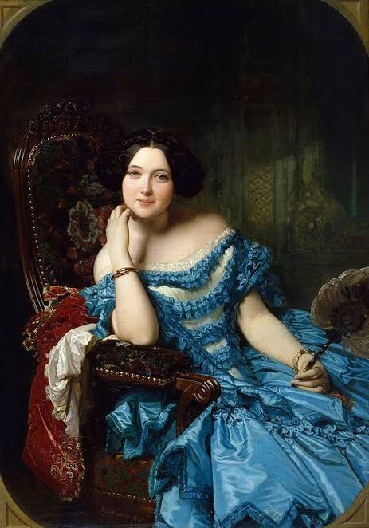

Conheça as mulheres incríveis que revolucionaram a história da computação e abriram caminho para a tecnologia moderna.

Ada Lovelace
Matemática e primeira programadora da história ao criar o primeiro algoritmo.
Ler históriaConheça as mulheres incríveis que revolucionaram a história da computação e abriram caminho para a tecnologia moderna.

Matemática e primeira programadora da história ao criar o primeiro algoritmo.
Ler história